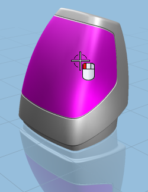
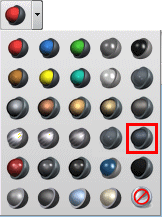

Create a glass panel in front of the housing
-
Select the front panel of the housing.

-
From the Override Materials Drop-down list, select Dark Glass .


Note that because of the transparency of the glass, you can see inside the housing.